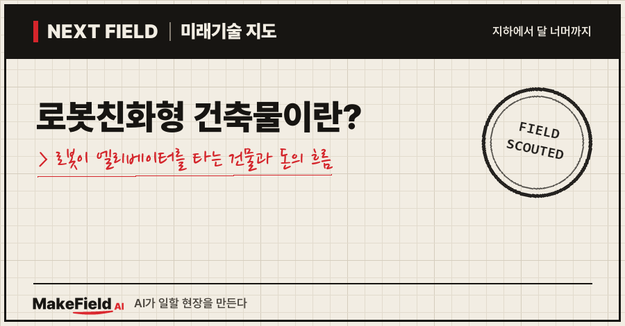
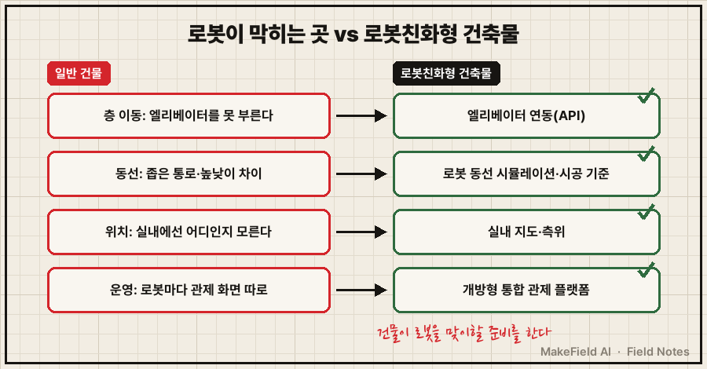
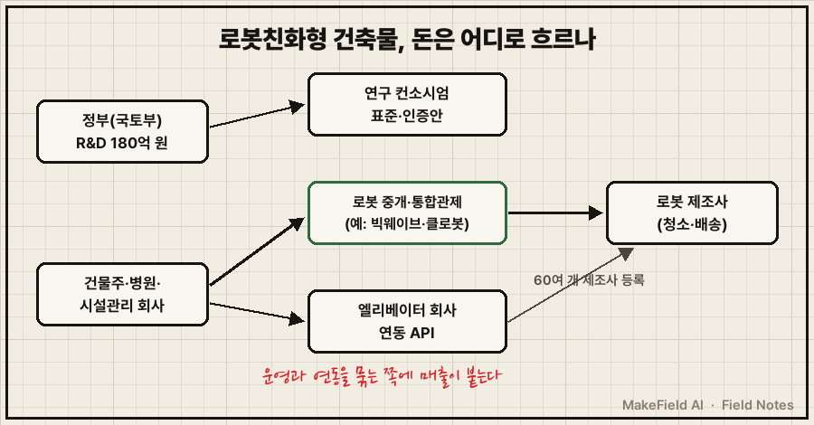
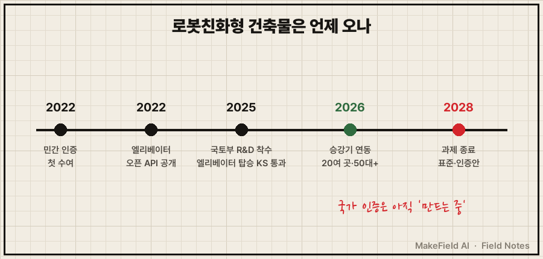

병원에서 검체를 실은 로봇이 엘리베이터를 타고 층을 옮기는 장면, 이제 시연이 아니라 실제 운영 현장이에요(헤럴드경제 2026-04).
한 줄 요약: 로봇친화형 건축물은 로봇이 엘리베이터·통로·관제 시스템을 사람처럼 쓸 수 있게 처음부터 설계·운영하는 건물이고, 국토교통부는 2025~2028년 정부 출연금 180억 원을 들여 그 설계 기준과 표준·인증제도안을 만드는 중입니다(한국냉난방공조신문 2025-06). 2026년 10월 현재 국가 공인 인증은 아직 없고, 2022년부터 민간 협회 인증만 있어요.
돈은 로봇 자체보다 '여러 로봇을 건물과 이어 굴리는 쪽' 으로 먼저 흐르고 있습니다. 왜 그런지 차례로 풀어 볼게요.
1. 로봇친화형 건축물이란 무엇인가요
로봇친화형 건축물이란 로봇의 이동·층간 이동·위치 확인·관제를 건물 설계 단계부터 반영한 건물이다. 일반 건물은 사람만 생각하고 지어서, 로봇이 들어오면 곳곳에서 멈춰요.
💡 로봇 친화 설계 — 사람만이 아니라 로봇도 '입주자'로 보고 지은 건물. 휠체어 경사로처럼, 로봇이 다닐 길과 탈 엘리베이터를 미리 준비해 둔다.
국토부 과제는 이 일을 세 갈래로 나눠요(한국냉난방공조신문 2025-06).
| 갈래 | 하는 일 |
|---|---|
| ① 설계·시공 | 사람과 로봇의 움직임을 시뮬레이션해 설계를 자동화하고, 건축 재료·시공 기준을 만든다 |
| ② 로봇 지원·운영 | 여러 종류 로봇이 함께 움직이게 돕는 시스템, 실내 지도·측위, 개방형 관제 플랫폼을 만든다 |
| ③ 실증·제도 | 실제 건물에서 검증하고 기술표준·인증제도 등 제도 개선안을 마련한다 |
💡 측위 — 실내에서 로봇이 지금 어디 있는지 알아내는 기술. GPS가 안 닿는 건물 안의 '내비게이션 위치 찾기'다.
💡 관제 플랫폼 — 여러 로봇의 위치·상태·고장을 한 화면에서 보고 명령하는 소프트웨어. 공항 관제탑의 로봇판이다.

그림을 글로 정리하면, 로봇이 건물에서 막히는 지점은 층 이동·동선·위치·운영 네 곳이고, 로봇 친화 설계는 이 네 곳을 각각 엘리베이터 연동, 동선 설계 기준, 실내 지도·측위, 통합 관제로 풉니다.
실증 후보지는 계명대 동산의료원, 강동 경희대병원, 포항 터미널 세 곳이에요(한국냉난방공조신문 2025-06). 병원과 터미널처럼 사람 많고 물건이 쉼 없이 오가는 건물이 먼저 시험대에 올랐습니다.
2. 왜 지금 건물이 로봇을 맞을 준비를 하나요
로봇이 한 층을 넘어 건물 전체를 다니기 시작하면서, 병목이 '로봇 성능'에서 '건물과의 연결'로 옮겨 갔기 때문이다. 가장 큰 병목은 엘리베이터예요. 로봇이 층을 옮기려면 엘리베이터를 부르고, 타고, 내려야 합니다.
현대엘리베이터는 2022년 3월 로봇·스마트기기를 엘리베이터와 잇는 오픈 API를 공개했어요. 클라우드 방식이라 연동에 추가 장비가 필요 없고, 2025년 3월 기준 60여 개 로봇 제조사가 플랫폼 계정 등록을 마쳤습니다(스마트투데이 2025-03).
💡 오픈 API — 다른 회사 프로그램이 내 시스템에 명령을 보낼 수 있게 공개한 '접속 규칙'. 로봇이 엘리베이터 호출 버튼을 대신 누르는 통로다.
2026년 4월 보도에 따르면 이 회사 승강기와 연동된 로봇은 병원·호텔·아파트·빌딩 등 20여 곳에서 50대 이상 운영 중이고, 연내 40여 곳으로 늘어날 전망이에요. 용인세브란스병원에서는 서로 다른 세 회사의 의료 서비스 로봇 11대가 승강기를 타고 혈액·검체·소모품을 나릅니다(헤럴드경제 2026-04).
안전 기준도 생겼어요. 이동 로봇의 엘리베이터 탑승 안전을 보는 국가표준 KS B 7317 이 있고, 2025년 5월 클로봇의 청소로봇 2종이 한국로봇산업진흥원 주관 평가를 통과했습니다. 평가 항목은 장애물 감지·보호 정지, 전도·추락 방지, 높낮이 차이 극복, 배터리 안전성, 엘리베이터 제어 안전성이에요(헬로티 2025-05).
💡 KS B 7317 — 로봇이 엘리베이터를 안전하게 타고 내리는지 보는 한국산업표준(KS). 로봇판 '엘리베이터 탑승 면허 시험'이다.
정책도 움직여요. 김윤덕 국토부 장관은 2026년 5월 로봇 이동을 고려해 설계된 네이버 1784 사옥을 찾아 이동로봇 활성화를 위한 "과감한 규제합리화"를 추진하겠다고 밝혔습니다(헤럴드경제 2026-05).
3. 돈의 흐름 — 누가 사고 누가 파나요
건물주·병원·시설관리 회사가 돈을 내고, 로봇 중개·통합관제 회사와 엘리베이터 회사가 '연결'을 팔며, 정부는 표준·인증을 만드는 연구에 돈을 댄다. 공개 자료로 확인되는 구간을 묶으면 이렇습니다.
| 구간 | 누가(예시) | 무엇을 | 규모(공개 자료) |
|---|---|---|---|
| 제도·연구 | 국토부 → 경희대 산학협력단 컨소시엄 | 설계 기준·관제·표준·인증안 | 2025~2028 정부 180억 원(한국냉난방공조신문 2025-06) |
| 로봇 중개·통합관제 | 빅웨이브로보틱스 | 로봇 매칭 '마로솔', 제조사가 달라도 한 화면에서 보는 클라우드 통합관제 '솔링크' | 2025 매출 약 207억 원(알파스퀘어 2026-07) |
| 범용 SW·통합관제 | 클로봇 | 여러 제조사 로봇에 얹는 자율주행 SW, 이기종 로봇 통합 관제 | 2025 매출 414억 원(분석 글·재무 사이트) |
| 층간 이동 | 현대엘리베이터 | 로봇-승강기 연동 API | 60여 개 제조사 등록(스마트투데이 2025-03) |
| 최종 수요 | 병원·호텔·오피스·아파트 | 청소·배송 로봇 도입 | 국내 청소로봇 2026년 약 5,000대 추정(아시아경제 2024-03) |
💡 이기종 로봇 — 만든 회사·종류가 서로 다른 로봇들. 이들을 한 건물에서 함께 굴리는 것이 운영의 핵심 난제다.

숫자로 보면 '연결'을 파는 쪽이 커지고 있어요. 빅웨이브로보틱스는 매출이 2023년 약 69억 → 2024년 약 139억 → 2025년 약 207억 원으로 늘었고, 2025년 영업이익 약 7억 원으로 흑자 전환했습니다. 누적 고객사는 2021년 69개에서 2025년 638개, 재구매 고객사 비중은 55.0%예요(알파스퀘어 2026-07, 증권신고서 기반 분석 글 1건). 클로봇 매출은 2023년 242억 → 2024년 334억 → 2025년 414억 원입니다(브런치 기업분석·밸류라인).
시장 크기는 아직 '수천 대' 단위예요. 국내 청소로봇은 2023년까지 약 300대, 2024년 약 1,000대(로봇 솔루션사 마로솔 전망)였고, 업계는 2025년 2,000대·2026년 5,000대로 추산했습니다(아시아경제 2024-03). 2026년 실제 판매 대수는 이 글에서 확인하지 못했어요.
※ 위 기업명과 수치는 산업 구조를 설명하기 위한 예시입니다. 특정 종목의 매수·매도를 권하는 글이 아닙니다.
4. 인증은 누가 주나요 — 지금은 민간, 국가는 '만드는 중'
2026년 10월 현재 로봇 친화 건물 인증은 민간 협회의 사설 인증뿐이고, 국가 표준·인증제도안은 2028년 국토부 과제 결과로 나온다. 사단법인 스마트도시협회는 2022년 4월 네이버 신사옥 '1784'에 로봇 친화형 건축물 인증 최우수 등급을 줬어요(뉴시스 2022-04).
💡 사설 인증 — 법이 정한 국가 인증이 아니라 민간 단체가 자체 기준으로 주는 인증. 신뢰도는 그 단체의 평판에 달려 있다.
이 인증은 건축·시설 설계, 네트워크·시스템, 건축 운영 관리, 로봇 지원·기타 서비스 4개 부문, 25개 평가 범주(필수·부가) 로 구성돼요. 필수 범주를 모두 충족한 건물만 점수에 따라 최우수·우수·일반 등급을 받습니다(뉴시스 2022-04).
| 구분 | 민간 인증(현재) | 국가 제도(준비 중) |
|---|---|---|
| 주는 곳 | 스마트도시협회 | 국토부 과제 결과로 제도안 마련 |
| 시작 | 2022-04 첫 수여 | 과제 기간 2025~2028 |
| 법적 효력 | 사설 인증 | 인증 기준·시행 시기 미공개 |

타임라인으로 정리하면 2022년 민간 인증과 엘리베이터 API가 먼저 열렸고, 2025년 국가 R&D와 엘리베이터 탑승 국가표준 평가가 시작됐으며, 국가 인증·표준안은 2028년 과제 종료 시점에 나올 예정이에요.
5. 한계와 반대 근거 — 언제 일상이 되나요
발표와 실증은 늘고 있지만, 국가 인증 기준·시행 시기는 공개되지 않았고 보안 문제라는 새 걸림돌이 생겼다. 따져 볼 점은 이래요.
- 국가 인증은 아직 없다: 국토부 과제는 2028년까지이고, 공개 기사에는 인증 기준·신청 절차·시행 시기가 나오지 않아요(한국냉난방공조신문 2025-06).
- 시장은 아직 작다: 국내 청소로봇 대수는 수천 대 수준의 업계 추정치예요(아시아경제 2024-03).
- 흑자는 아직 일부: 빅웨이브로보틱스 흑자 전환은 증권신고서를 인용한 분석 글 1건 기준이고, 클로봇은 2025년에도 영업손실로 정리돼 있어요(브런치 기업분석).
- 중국산 로봇 보안: 국내 식당·호텔 등 서비스 로봇 1만 7천 대 이상 중 약 60%인 1만 대가 중국산으로 추산돼요. 과기정통부는 KISA를 통해 보안 위협을 점검하고 결과를 공표하려고 정보통신망법 개정을 추진하고 있습니다. 현행법으로는 기업 동의 없이 정부가 먼저 점검·공표할 수 없어요(한국경제 2025-11). 로봇이 클라우드 서버와 영상·위치 데이터를 실시간으로 주고받는 구조가 우려의 핵심입니다. 개정안 통과 여부는 이 글에서 확인하지 못했어요.
💡 KISA(한국인터넷진흥원) — 과기정통부 산하 사이버보안 전담 공공기관.
건물이 로봇을 받아들이면, 로봇이 보는 영상과 건물 내부 지도도 함께 네트워크에 올라가요. 그래서 로봇을 맞는 건물의 다음 숙제는 '잘 다니게 하기'에서 '안전하게 연결하기'로 넓어지고 있습니다.
자주 묻는 질문
Q. 로봇친화형 건축물 인증을 받으면 법적 혜택이 있나요?
2026년 10월 기준 공개 자료에서 확인되는 인증은 스마트도시협회의 사설 인증이에요(뉴시스 2022-04). 국가 인증·표준은 국토부 과제(2025~2028)로 제도안을 만드는 단계라, 법적 혜택을 말할 근거는 아직 없습니다.
Q. 기존 건물에도 로봇이 엘리베이터를 탈 수 있나요?
현대엘리베이터 오픈 API는 클라우드 기반이라 연동에 추가 장비가 필요 없다고 소개돼요(스마트투데이 2025-03). 실제로 병원·호텔·아파트 등 20여 곳에서 50대 이상이 운영 중입니다(헤럴드경제 2026-04). 다만 건물마다 승강기 제조사와 연동 방식은 확인이 필요해요.
Q. 로봇친화형 건축물과 스마트빌딩은 같은 말인가요?
스마트빌딩은 냉난방·조명·출입 등 건물 설비를 네트워크로 묶어 자동 운영하는 넓은 개념이에요. 로봇 친화 건물은 그중 로봇의 이동·관제까지 설계에 넣은 건물이고, 국토부도 이 과제를 '스마트+빌딩' 핵심기술 개발의 하나로 추진하고 있습니다(한국냉난방공조신문 2025-06).
오늘의 용어 정리
- 로봇친화형 건축물 — 로봇의 이동·층간 이동·위치 확인·관제를 설계 단계부터 반영한 건물
- 측위 — 실내에서 로봇 위치를 알아내는 기술
- 관제 플랫폼 — 여러 로봇을 한 화면에서 보고 명령하는 소프트웨어
- 오픈 API — 다른 프로그램이 내 시스템에 명령할 수 있게 공개한 접속 규칙
- KS B 7317 — 이동 로봇의 엘리베이터 탑승 안전 한국산업표준
- 이기종 로봇 — 제조사·종류가 서로 다른 로봇들
- 사설 인증 — 민간 단체가 자체 기준으로 주는 인증
- KISA — 과기정통부 산하 사이버보안 공공기관
지난 Next Field에서 휴머노이드 로봇의 관절 부품(액추에이터)을 다뤘다면, 오늘은 그 로봇들이 다닐 '건물' 쪽 이야기였어요. 여러분이 일하는 건물에 로봇이 들어온다면, 가장 먼저 막힐 곳은 엘리베이터일까요, 출입문일까요?
출처
[1] 한국냉난방공조신문(2025-06) — 국토부 '로봇친화형 건축물 설계·시공 및 운영·관리 핵심기술 개발' 과제: 2025~2028년 정부 출연금 180억 원, 경희대 산학협력단 컨소시엄, 세부 과제 3갈래(설계·시공 / 로봇 지원·실내 지도·측위·개방형 관제 / 실증·기술표준·인증제도 개선), 실증 후보지 3곳
→ https://www.kharn.kr/news/article.html?no=27912
[2] 뉴시스(2022-04) — 스마트도시협회 로봇 친화형 건축물 사설 인증, 네이버 1784 최우수 등급, 4개 부문·25개 평가 범주(필수·부가), 필수 충족 시 최우수·우수·일반 등급
→ https://mobile.newsis.com/view/NISX20220411_0001828393
[3] 스마트투데이(2025-03) — 현대엘리베이터 2022-03 로봇 연동 오픈 API 공개, 클라우드 기반으로 추가 장비 불필요, 60여 개 로봇 제조사 플랫폼 계정 등록
→ https://www.smarttoday.co.kr/ko-kr/articles/75206
[4] 헤럴드경제(2026-04) — 현대엘리베이터 승강기 연동 로봇 20여 곳·50대 이상 운영, 연내 40여 곳 전망, 용인세브란스병원 의료 서비스 로봇 11대 운영
→ https://www.heraldk.com/article/2026040216572543326
[5] 헤럴드경제(2026-05) — 김윤덕 국토부 장관 네이버1784 방문, 이동로봇 활성화를 위한 규제합리화 추진 언급
→ https://www.heraldk.com/article/2026052701573767632
[6] 헬로티(2025-05) — 클로봇 청소로봇 2종 KS B 7317(이동 로봇 엘리베이터 탑승 안전) 평가 통과, 한국로봇산업진흥원 주관, 평가 항목
→ https://www.hellot.net/news/article.html?no=101407
[7] 알파스퀘어(2026-07) — 빅웨이브로보틱스 매출 2023년 약 69억·2024년 약 139억·2025년 약 207억 원, 2025년 영업이익 약 7억 원 흑자 전환, 누적 고객사 638개, 재구매 비중 55.0%, 마로솔·솔링크 사업 구성(증권신고서 기반 분석 글)
→ https://alphasquare.co.kr/home/insight/posts/e3e57fdf-2c2a-4083-8cac-9d4cf2c3c19a
[8] 브런치 기업분석·밸류라인(2025년 실적) — 클로봇 매출 2023년 242억·2024년 334억·2025년 414억 원, 2025년 영업손실
→ https://brunch.co.kr/@bexy00/467
→ https://www.valueline.co.kr/finance/income/466100
[9] 아시아경제(2024-03) — 국내 청소로봇 2023년까지 약 300대, 2024년 약 1,000대(마로솔 전망), 2025년 2,000대·2026년 5,000대 업계 추산
→ https://view.asiae.co.kr/article/2024030716562282942
[10] 한국경제(2025-11) — 국내 서비스 로봇 1만 7천 대 이상 중 약 60% 중국산 추산, KISA 보안 점검·공표를 위한 정보통신망법 개정 추진, 현행법상 기업 동의 없이 선제 점검·공표 불가, 클라우드 영상·위치 데이터 실시간 전송 우려
→ https://www.hankyung.com/article/2025110687171